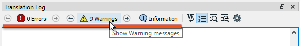

After completing this lesson, you’ll be able to:
The FME log file is your best friend for debugging. It tells you how long a translation took, where the time went, and how well FME used the available system resources.
The first thing to notice is that each line of the log is (in most cases) a separate message, for example:
Creating writer for format: Esri Shapefile
However, sometimes the message spans several lines, such as:
Feature Caching is ON
The workspace may run slower because features are being recorded on all output ports.
Stop At Breakpoints is ON
The workspace may run slower, even when no breakpoints are present. In particular, Bulk Mode is not supported with this enabled.There are several options to adjust what appears in the log file. To access these, select Tools > FME Options > Translation:
The critical setting is Log Timestamp Information. This option turns on many optional fields in the log messages. These are:
For example:
2019-04-01 12:13:55| 0.8| 0.0|INFORM|Closing native MapInfo reader
You can use these timestamps to identify slow sections of your workspace.
The log file always contains timestamps, regardless of this setting.
A common requirement is to filter log messages so only messages of a specific type are displayed. For example, turning off INFORM and STAT messages can make spotting ERRORs and WARNs easier.
There are two ways to achieve this. Firstly, you can filter log messages under options under Tools > FME Options > Translation:

These options turn each message type on (or off) for all subsequent translation logs. If a message type is unchecked here, it will not appear in the log.
The second method of filtering is a set of tools in the log window itself:

These buttons can toggle messages on and off in the log window only. They are easier to use and more flexible than using the FME Options for filtering.
The Log Debug option (under FME Options) allows you to turn on debug messages in the log. These are extra log messages that do not appear by default.